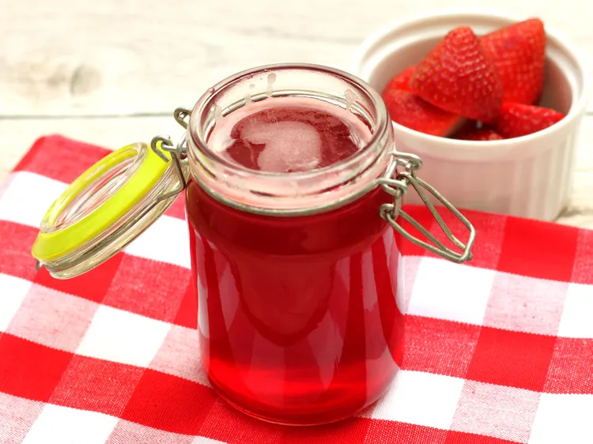

Strawberry Syrup

Use this strawberry syrup to make natural-flavored beverages. My nephew loves strawberry milk. This simple recipe came from an attempt to create a more natural substitute for the strawberry syrup sold in stores. I even use it in my own beverages!
Ingredients
- 1 cup water
- 1 cup white sugar
- 2 cups quartered strawberries
- Combine water and sugar in a saucepan over medium-high heat; stir until sugar is dissolved. Mix strawberries into saucepan and bring to a boil; boil for 10 minutes.
- Reduce heat to medium-low; simmer until strawberries are mushy and sauce is thick, about 10 minutes. Strain liquid into a bottle and refrigerate.
Home